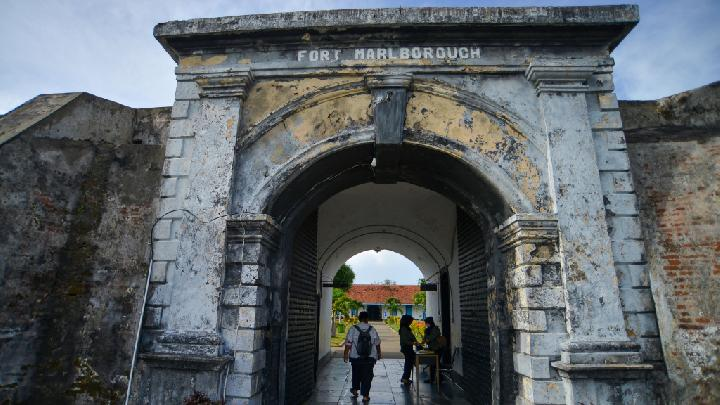

Benteng Marlborough
ditulis oleh Warisan Budayapada 1 April 2024
Benteng Marlborough, juga dikenal sebagai Benteng Malborough, adalah sebuah benteng bersejarah yang terletak di kota Bengkulu, Provinsi Bengkulu, Indonesia. Berikut adalah deskripsi lengkap tentang Benteng Marlborough:

Sejarah: Benteng Marlborough dibangun pada tahun 1713 oleh Belanda sebagai bagian dari pertahanan mereka terhadap serangan dari kekuatan kolonial Inggris dan Prancis. Setelah berganti tangan beberapa kali selama abad ke-18, benteng ini akhirnya dikuasai oleh Inggris pada tahun 1811 selama periode pendudukan Inggris di Indonesia.
Arsitektur: Benteng Marlborough memiliki arsitektur yang khas dengan dinding-dinding kokoh yang terbuat dari batu bata merah. Benteng ini memiliki bentuk yang tidak teratur dengan beberapa sudut menonjol dan menara pengawas. Pada masa lalu, benteng ini dilengkapi dengan meriam-meriam untuk pertahanan.
Fungsi: Awalnya, Benteng Marlborough berfungsi sebagai pusat administrasi dan pertahanan militer. Namun, setelah pendudukan Inggris, benteng ini juga digunakan sebagai penjara politik. Saat ini, benteng ini telah diubah menjadi situs bersejarah dan museum yang menampilkan artefak dan informasi mengenai sejarah Bengkulu dan periode kolonial.
Lokasi: Benteng Marlborough terletak di pusat kota Bengkulu, membuatnya mudah diakses oleh para pengunjung. Lokasinya yang strategis di tepi pantai juga menawarkan pemandangan yang menarik ke arah Samudra Hindia.
Pentingnya Pelestarian: Benteng Marlborough adalah salah satu warisan bersejarah yang penting bagi Indonesia. Pelestarian dan pemeliharaan benteng ini penting untuk memastikan bahwa sejarahnya terus dihargai dan dilestarikan untuk generasi mendatang. Selain itu, sebagai objek wisata, benteng ini juga membantu dalam mempromosikan pariwisata budaya di Bengkulu.
Benteng Marlborough adalah salah satu situs bersejarah yang menarik untuk dikunjungi di Bengkulu. Dengan arsitektur yang megah dan sejarah yang kaya, benteng ini menyajikan pengalaman yang informatif dan menginspirasi bagi para pengunjung yang tertarik dengan sejarah kolonial di Indonesia.